Support
Nightjar for macOS
Getting in touch
Email khangazun@gmail.com. The link fills in a template, because a report without the macOS version takes two more round trips to answer. Expect a reply within a few days.
Common questions
The display still sleeps, or the Mac still sleeps
Check which of the three states the switch is in. Mac and display holds both awake; Mac only deliberately lets the screen go dark. The panel says which one is in force.
"Stay awake with the display off" does nothing on battery
That is macOS, not Nightjar. The assertion that keeps a Mac awake with the screen off is only honoured on the power adapter; on battery the system accepts the request and then ignores it. Nightjar shows an orange note when this applies rather than pretending it worked.
The screensaver still starts
Power assertions cannot stop the screensaver — it runs on its own idle clock and ignores them, which is why apps that claim to prevent it often fail. Nightjar can hold it off, but only with your permission: switch on Hold off the screensaver in Settings › General and grant the permission macOS asks for. With it on, Nightjar posts at most one empty modifier key every thirty seconds, and only if the Mac has already been quiet that long. It moves no cursor and types nothing.
Closing the lid still sleeps the Mac
Closing the lid is an explicit sleep instruction that no App Store app can override, so this one feature needs the small free helper from the Nightjar Lid page. After installing it, switch on Keep awake with the lid closed in Settings › General and leave Nightjar running for a few seconds. If Settings says the helper is installed but is not receiving anything, log out and back in once: the part that relays the permission starts with your login session.
The session stops on its own
Three things end a session on purpose: the countdown reaching zero, the battery falling below the level set in Settings, and the charger being unplugged if that rule is on. The panel's subtitle says which one it was.
A condition is switching it on when I do not want it to
Settings › Triggers lists every condition with a tick beside the ones currently true, so you can see which one is holding the session open. Remove it with the button at the end of its row, or set Stay awake while to all hold so a single condition is no longer enough.
Some conditions other apps offer are missing
On purpose. A sandboxed app cannot see background processes, and the name of the Wi-Fi network needs Location access. Rather than offering conditions that would quietly never fire, Nightjar leaves them out and says so in Settings.
Removing the helper
Open Nightjar Lid and click Remove. It clears the lid override before uninstalling, so the Mac is never left unable to sleep. Removing Nightjar itself does not remove the helper; the helper stops acting the moment Nightjar is no longer renewing its permission, and withdraws it within a minute.
Which languages
Thirty-four. Nightjar follows the language order in System Settings › General › Language & Region.
Requirements
- macOS 14 Sonoma or later.
- Apple silicon or Intel.
- No network connection is needed, or used.